01 Klassen, Felder & Methoden
Die beste Definition für eine Klasse stammt bereits aus der C#-Dokumentation von Microsoft:
Klassen sind die grundlegendsten der C#-Typen. Eine Klasse ist eine Datenstruktur, die einen Zustand (Felder) und Aktionen (Methoden und andere Funktionsmember) in einer einzigen Einheit kombiniert. Eine Klasse stellt eine Definition für dynamisch erstellte Instanzen der Klasse, auch bekannt als Objekte bereit. Klassen unterstützen Vererbung und Polymorphie. Dies sind Mechanismen, durch die abgeleitete Klassen erweitert und Basisklassen spezialisiert werden können.
Was sind Member? Member umfassen u.a.:
- Felder (Variablen einer Klasse)
- Methoden (Funktionalität der Klasse bzw. Aktionen, die von der Klasse ausgeführt werden können) Member einer Klasse können entweder static sein oder gehören zur Instanz einer Klasse (siehe 03).
Ein vollständige Liste der Member kann unter einem der Links von “Quellen und weiterführende Links” gefunden werden.
02 Statische & Dynamische Klassen
Hier gilt es eine wichtige Unterscheidung zu machen: Wenn von statischen Klassen gesprochen wird, spricht man zwar i.d.R. von Klassen mit dem Schlüsselwort static, jedoch kann man sich damit auch auf Klassen in einem größeren Kontext beziehen, gemeint damit sind alle “normalen” Klassen, bei denen schon zur Compile-Zeit alle Member bekannt sind. Es handelt sich also um die klassischen Klassen, die am Häufigsten verwendet werden. Von dieser Art der statischen Klassen spricht man, um sie von dynamischen Klassen abzugrenzen.
Bei dynamischen Klassen (dynamisch == zur Laufzeit) können zur Laufzeit neue Member hinzugefügt werden. Dies geschieht mit Hilfe von overrides und Dictionaries.
Klassen mit dem Schlüsselwort static sind wie normale Klassen mit dem Unterschied, dass static Klassen nicht intanziiert werden können. Außerdem müssen alle Member einer static Klasse ebenfalls static sein.
Um also z.B. auf einen Member einer statischen (static) Klasse zuzugreifen, muss man diese direkt aufrufen (Punktnotation!).
Ein Beispiel.: Wir wollen auf die statische (static) Methode UseSenses der statischen (static) Klasse WitcherSenses zugreifen,
also würde der Aufruf wie folgt geschehen:
WitcherSenses.UseSenses()
03 Instanzen
Durch verwendung des new Operators können Intanzen von Klassen a.k.a. Ojekte angelegt werden.
Beispiel:
Wir haben bereits eine Klasse namens “Monster” angelegt, nun kann ein Objekt des Typs “Monster” mit Hilfe des new Operators erzeugt werden:
Monster monster1 = new Monster();
in der Variable “monster1” ist nun eine Referenz auf eine Instanz der Klasse Monster gespeichert, auf das weiterhin über den Variablennamen zugegriffen werden kann.
Enthält die Klasse Monster z.B. eine Methode namens “SearchForEnemy”, so können wir diese Methode unseres Monster-Objekts wie folgt ausführen:
monster1.SearchForEnemy();
04 Methoden - Funktionalität
Methoden sind im Grunde die möglichen Aktionen einer Klasse.
Beispiel: Gehen wir davon aus, dass wir eine Klasse entwerfen, die ein standard Monster darstellen soll, dann müssen wir uns überlegen, was alle normalen Monster gemeinsam haben, dies umfasst Variablen, die die Eigenschaften der Monster beschreiben (Gewicht, Name usw.) und Methoden, die zusätzlich umfassen, was ein Monster “kann”, wie Beispielsweise: Eat, Sleep, SearchForEnemy, Attack oder RunAway.
Hierbei haben verschiedene Methoden verschiedene Voraussetzungen, damit ihre Funktion implementiert werden kann. Als Übung legen wir nun eine Klasse Monster an.
05 Einfache Methoden
Vergesst für dieses Beispiel nicht, das Wort “public” vor jede eurer Methoden zu schreiben da eure Main Methode ansonsten keinen Zugriff auf die Methode des Objekts hat.
Wir bleiben bei unserem Beispiel mit der Klasse “Monster”. Eine einfache Methode, die keine speziellen Voraussetzungen benötigt könnte “Sleep” sein.
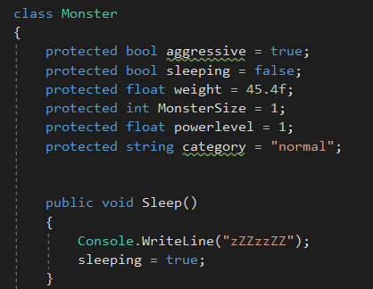 Wird die Methode “Sleep” aufgerufen, wird die Zeile “zZZzzZZ” in die Konsole geschrieben. Void bedeutet hier, dass die Methode keinen Wert zurückliefert (mehr hierzu in 07).
06 Methoden mit Prametern
Methoden mit Parametern benötigen, wie der Name bereits sagt, Parameter mit Hilfe derer sie ihre Funktion erfüllen können.
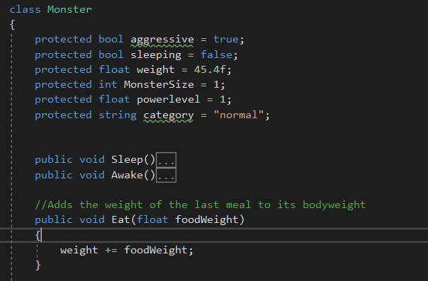 Der Methode Eat nimmt als Parameter einen float entgegen, der name “foodWeight” ist hierbei ein Platzhalter und kann beim Methodenaufruf durch einen beliebigen float Wert ersetzt werden. Ruft ein Monster-Objekt nun diese Methode auf, erhöht es seine weight Variable um den eingegebenen float Wert. Beispiel eines korrekten Aufrufs anhand des Monster Beispiels (aufruf in der Main Methode):
Monster monster1 = new Monster();
monster1.Eat(45f));
Das kleine “f” hinter dem Mitgabeparameter symbolisiert, dass es sich bei der Zahl (die ohne Gleitkomma angegeben wurde) um einen float handelt
07 Methoden mit Rückgabewert
Bisher haben wir nur Methoden ohne Rückgabewert (void) verwendet, es gibt jedoch Methoden, die einen Wert zurückliefern.
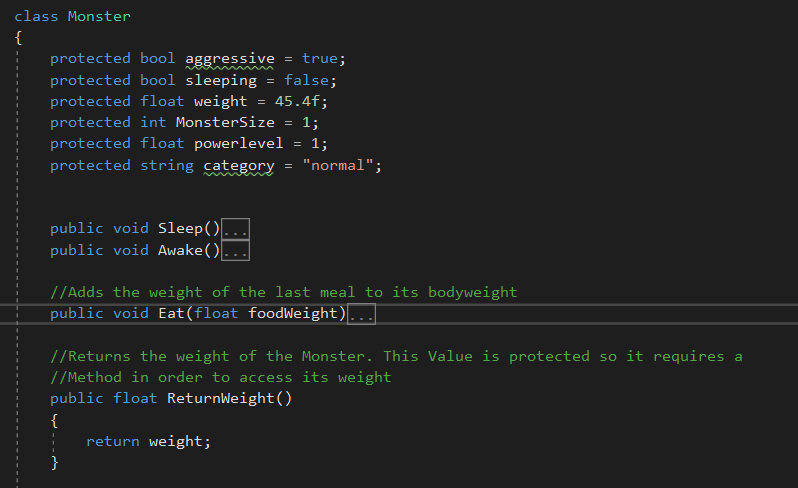
Diese Methode gibt den Zahlenwert von weight zurück. Doch warum ist sie überhaupt nötig?
Durch das Voranstellen von protected haben wir die Variable unzugänglich für andere Klassen gemacht, dies ist ein wichtiger Aspekt der Kapselung (dazu mehr im Überkapitel 03), deswegen stellen wir eine public Methode bereit, durch die der Wert abgerufen werden kann.
Rufen wir die Methode wie folgt auf:
monster1.ReturnWeight()
erzeugt sie einen Rückgabewert vom typ float.
08 Ausgabeparameter Verwenden
Die Ausgabeparameter oder auch der Rückgabewert einer Methode können ähnlich wie Variablen vom selben Typ verwendet werden. Man kann sie in Berechnungen, Textausgaben oder in die Mitgabeparameter von weiteren Methoden (die man aufruft) einbauen. Hier ein einfaches Beispiel der Verwendung einer Methode mit Ausgabeparameter durch eine Textausgabe:
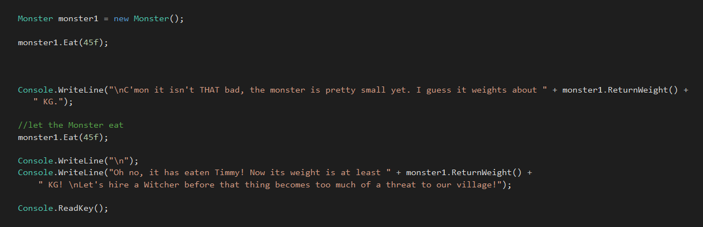 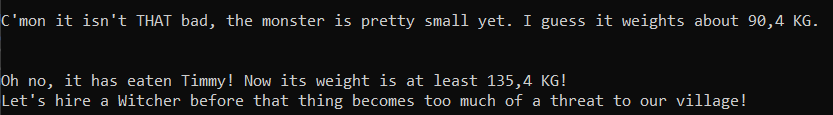
Hier ein weiteres Beispiel, wie eine Methode mit Ausgabeparameter als Mitgabeparameter verwendet wird. Es scheint sich hierbei um eine magisches Monster zu handeln, das selbst dann sein Gewicht erhöht, wenn es sich selbst frisst…, jedoch veranschaulicht es die Verwendung von Methoden mit Ausgabeparametern.
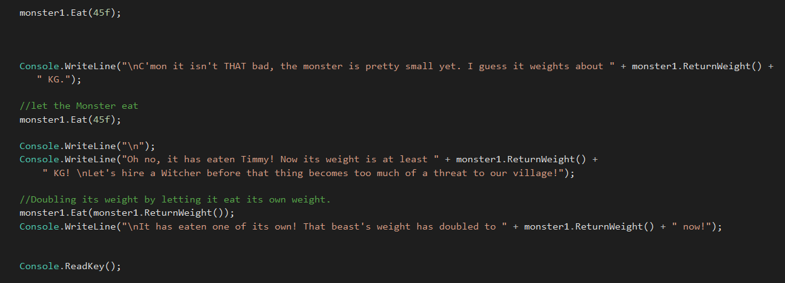 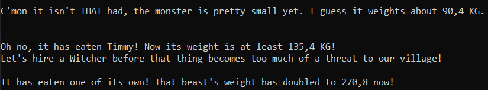
09 Vordefinierte Methoden
Nicht alle Methoden müssen selbst programmiert werden. Es gibt zahlreiche vordefinierte Methoden auf die zugegriffen werden kann. Eine dieser Methoden haben wir bereits kennengelernt und zwar “WriteLn” von der Klasse “Console”. Der Namespace “System” stellt außerdem Methoden für mathematische Berechnungen zur Verfügung, wie z.B. Math.sqrt() um die Quadratwurzel zu ziehen oder Math.Abs() um den absoluten Wert einer Zahl zurückzuerhalten.
10 Methoden überladen & Erweiterungsmethoden
Method overload bedeutet, dass zwei Methoden mit dem selben Namen, jedoch anderen Mitgabeparamatern verschiedene Aktionen ausführen können.
Erweitern wir also unsere Monster Klasse mit einem Method Overload:
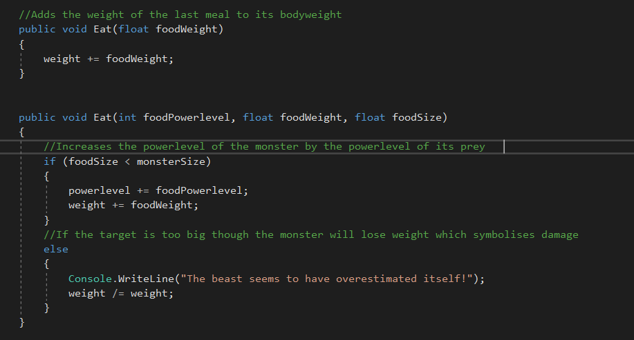
Nun rufen wir die überladene Methode in unserer Main Methode auf.
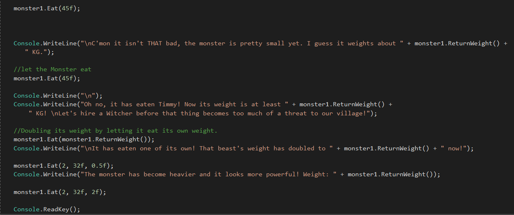
Und erhalten die folgende Konsolenausgabe:
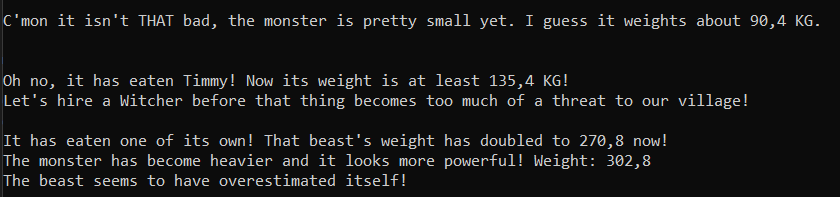
Zu erkennen: Eat wird auf zwei Weisen aufgerufen und führt abhängig von der Anzahl und dem Typ der Mitgabeparameter zwei unterschiedliche Aktionen aus.
Erweiterungsmethoden sind generell statische Methoden (static), man kann sie aufrufen, als wären sie Mitglied des Typs der Objektinstanz. Anders gesagt kann man mit einer statische Methode eine bereits bestehende Klasse erweitern, ohne die Klasse selbst ändern zu müssen. Zum Veranschaulichen erstellen wir eine Erweiterungsmethode für unsere Monster Klasse (d.h. wir erstellen zunächst eine neue static class), doch zuerst fügen wir unserer Monster Klasse noch ein paar “Getter und Setter” hinzu und bennen noch ReturnWeight in GetWeight um, damit die Methodenbenennung einheitlich bleibt. Außerdem wurde die Methode “PrintStats” hinzugefügt, damit wir die Veränderung der Statuswerte in Form eines string zur Verfügung gestellt werden können.
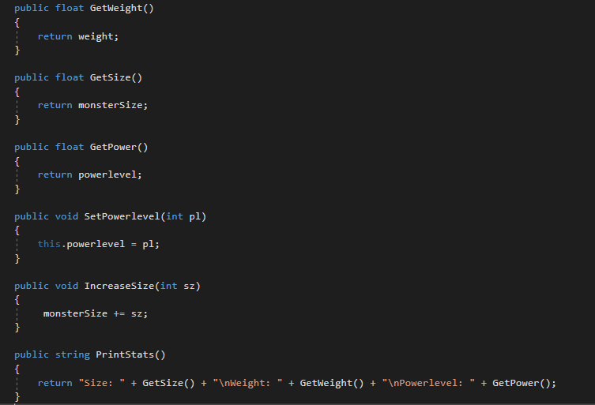
Als nächstes wird eine statische Klasse mit der Extensionmethode erstellt:
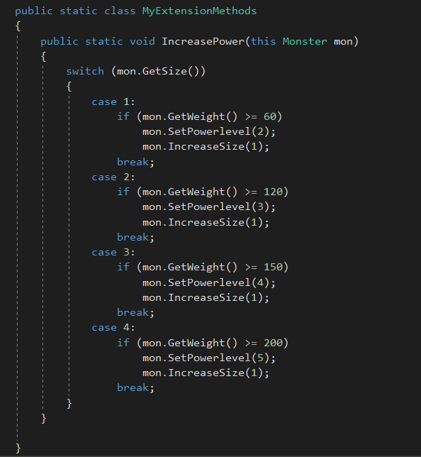
Zu beachten ist hier, dass sowohl die Klasse als auch die Methode static sein muss. In der Methode muss der erste Parameter dem Typ der Klasse, die wir erweitern wollen entsprechen und es muss this vorangestellt werden.
Die Methode prüft das Gewicht des Monsters und setzt dessen powerlevel auf einen entsprechenden Wert. Zusäzlich wird die Größe des Monsters erhöht (selbst, wenn dieses an Gewicht verliert und dadurch in ein niedrigeres powerlevel eingestuft wird - wie bereits erwähnt handelt es sich hier um irgend eine magische Kreatur…).
Wir können die Extension Method nun so aufrufen, wie wir jede Methode eines Monster-Objekts aufrufen würden:
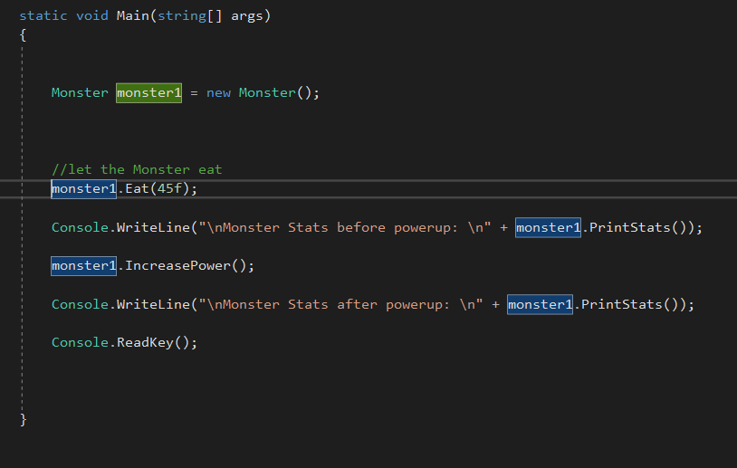
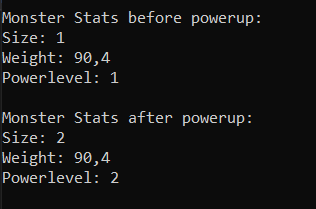
In der Praxis werden Extension Methods oft dazu verwendet die Klasse IEnumerables (beinhaltet Arrays und Collections) zu erweitern.
Alles verstanden? Sehr gut! Das war ein ganzes Stück Arbeit! Falls nicht, dann mache es wie Roach: Niemals aufgeben und weiter üben!
Quellen und weiterführende Links
01 https://docs.microsoft.com/de-de/dotnet/csharp/programming-guide/classes-and-structs/fields
https://docs.microsoft.com/de-de/dotnet/csharp/tour-of-csharp/classes-and-objects
02 http://openbook.rheinwerk-verlag.de/oo/oo_04_strukturvonooprogrammen_01_004.htm#Rxxob04strukturvonooprogrammen01004040015571f011130
http://www.biggle.de/blog/dynamische-klasse-mit-dynamicobject-erstellen
https://docs.microsoft.com/de-de/dotnet/csharp/programming-guide/classes-and-structs/static-classes-and-static-class-members
09 https://docs.microsoft.com/de-de/dotnet/api/system.math.abs?view=netframework-4.8
10 https://docs.microsoft.com/de-de/dotnet/csharp/programming-guide/classes-and-structs/extension-methods